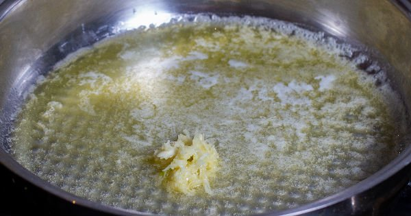

Ingredients
- 50 gr butter
- one clove of garlic
- 250 gr cubed meat
- 1 tsp pepper paste
- 1/4 tps ground red pepper
- 1/4 tsp salt
For the eggplant mix
- 250 gr yogurt
- 3 roasted eggplant
- 1/4 tsp salt
Method
- Take the butter in a deep pan. Add the garlic and sauté lightly.

- Then add finely chopped cubed meats and mix, close the lid and leave on low heat for 6-7 minutes until the water is released and cooked.
- After the meat is cooked, add tomato paste, ground red pepper and salt to taste and remove.

- Chop the roasted eggplants on the cutting board with a sharp knife.
- Chop until look like this and add pinch of salt.
- When they are well mashed, combine them with the yogurt in a bowl and mixed well.
- Take the yoghurt and eggplant mixture into the serving plate. Hole in the middle. Place the prepared meat on it. Serve with the sauce..Bon appetit!